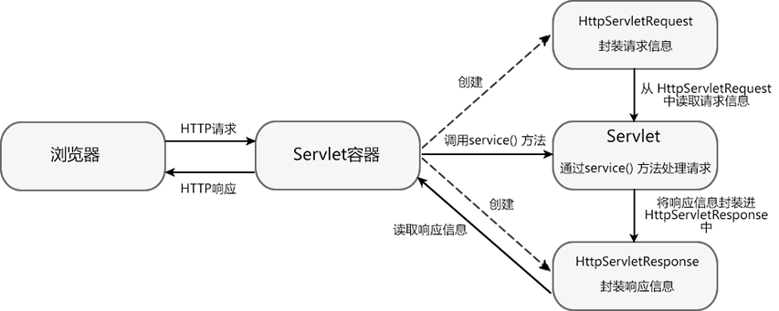
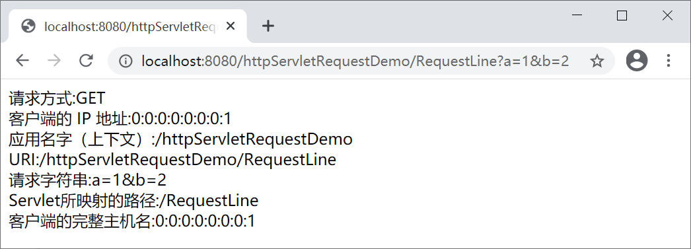
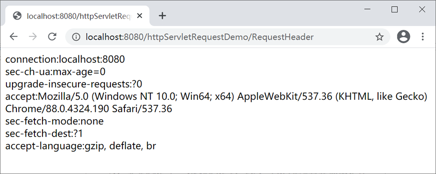
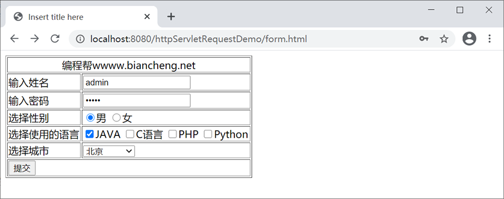
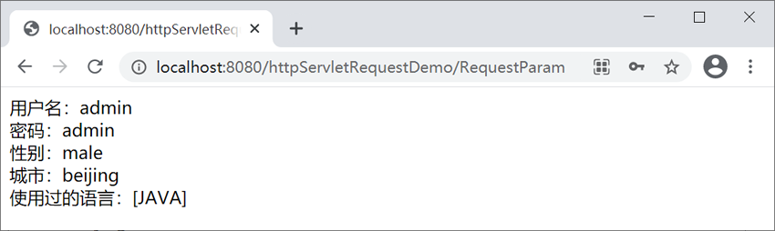
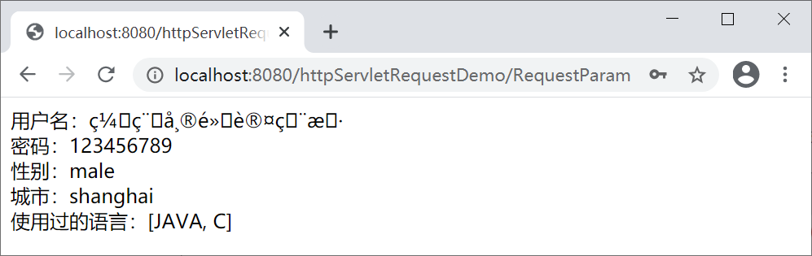

HttpServletRequest接口详解
一般情况下，浏览器（客户端）通过 HTTP 协议来访问服务器的资源，Servlet 主要用来处理 HTTP 请求。
Servlet 处理 HTTP 请求的流程如下：
通过以上流程可以看出， HttpServletRequest 和 HttpServletReponse 是 Servlet 处理 HTTP 请求流程中最重要的两个对象。HttpServletRequest 对象用于封装 HTTP 请求信息，HttpServletReponse 对象用于封装 HTTP 响应信息。
下面我们将对 HttpServletRequest 进行详细介绍。
HTTP 请求消息分为请求行、请求消息头和请求消息体三部分，所以 HttpServletRequest 接口中定义了获取请求行、请求头和请求消息体的相关方法。
创建一个名称为 httpServletRequestDemo 的项目，在 net.biancheng.www 包中创建一个名为 RequestLine 的 Servlet 类，代码如下。
启动 Tomcat 服务器，在地址栏中输入“http://localhost:8080/httpServletRequestDemo/RequestLine?a=1&b=2”，访问 RequestLine，结果如下图。
在 net.biancheng.www 包中创建一个名为 RequestHeader 的 Servlet 类，代码如下。
启动 Tomcat 服务器，在地址栏中输入“http://localhost:8080/httpServletRequestDemo/RequestHeader”，访问 RequestHeader ，结果如下图。
在 httpServletRequestDemo 的 WebContent 目录下，创建 form.html，代码如下。
在 net.biancheng.www 包中，创建一个名为 RequestParam 的 Servlet 类，代码如下。
启动 Tomcat 服务器，在地址栏中输入“http://localhost:8080/httpServletRequestDemo/form.html”，即可访问 form.html，结果如下图。
在表单中填写信息后，点击提交，结果如下图。
根据请求方式的不同，请求一般可以被分为两种：GET 请求和 POST 请求。这两种请求方式都可能会产生中文乱码问题，下面我们分别对它们产生乱码的原因及其解决方案进行介绍。
解决方案：在获取请求参数之前设置 request 缓冲区字符集为 utf-8 ,代码如下。
解决方案：解决 GET 请求中文乱码问题，有以下 3 种解决方案。
1. 修改 tomcat/conf/server.xml 中的配置，代码如下。
3. 使用 String 的构造方法：String(byte[] bytes, String charset) ，对字节数组（bytes）按照指定的字符集（charset）进行解码，返回解码后的字符串，解决乱码问题（推荐使用）。
Servlet 处理 HTTP 请求的流程如下：

- Servlet 容器接收到来自客户端的 HTTP 请求后，容器会针对该请求分别创建一个 HttpServletRequest 对象和 HttpServletReponse 对象。
- 容器将 HttpServletRequest 对象和 HttpServletReponse 对象以参数的形式传入 service() 方法内，并调用该方法。
- 在 service() 方法中 Servlet 通过 HttpServletRequest 对象获取客户端信息以及请求的相关信息。
- 对 HTTP 请求进行处理。
- 请求处理完成后，将响应信息封装到 HttpServletReponse 对象中。
- Servlet 容器将响应信息返回给客户端。
- 当 Servlet 容器将响应信息返回给客户端后，HttpServletRequest 对象和 HttpServletReponse 对象被销毁。
通过以上流程可以看出， HttpServletRequest 和 HttpServletReponse 是 Servlet 处理 HTTP 请求流程中最重要的两个对象。HttpServletRequest 对象用于封装 HTTP 请求信息，HttpServletReponse 对象用于封装 HTTP 响应信息。
下面我们将对 HttpServletRequest 进行详细介绍。
HttpServletRequest 接口
在 Servlet API 中，定义了一个 HttpServletRequest 接口，它继承自 ServletRequest 接口。HttpServletRequest 对象专门用于封装 HTTP 请求消息，简称 request 对象。HTTP 请求消息分为请求行、请求消息头和请求消息体三部分，所以 HttpServletRequest 接口中定义了获取请求行、请求头和请求消息体的相关方法。
获取请求行信息
HTTP 请求的请求行中包含请求方法、请求资源名、请求路径等信息，HttpServletRequest 接口定义了一系列获取请求行信息的方法，如下表。| 返回值类型 | 方法声明 | 描述 |
|---|---|---|
| String | getMethod() | 该方法用于获取 HTTP 请求方式（如 GET、POST 等）。 |
| String | getRequestURI() | 该方法用于获取请求行中的资源名称部分，即位于 URL 的主机和端口之后，参数部分之前的部分。 |
| String | getQueryString() | 该方法用于获取请求行中的参数部分，也就是 URL 中“?”以后的所有内容。 |
| String | getContextPath() | 返回当前 Servlet 所在的应用的名字（上下文）。对于默认（ROOT）上下文中的 Servlet，此方法返回空字符串""。 |
| String | getServletPath() | 该方法用于获取 Servlet 所映射的路径。 |
| String | getRemoteAddr() | 该方法用于获取客户端的 IP 地址。 |
| String | getRemoteHost() | 该方法用于获取客户端的完整主机名，如果无法解析出客户机的完整主机名，则该方法将会返回客户端的 IP 地址。 |
示例 1
为了更好地理解这些方法，下面通过案例演示这些方法的使用。创建一个名称为 httpServletRequestDemo 的项目，在 net.biancheng.www 包中创建一个名为 RequestLine 的 Servlet 类，代码如下。
package net.biancheng.www;
import java.io.IOException;
import java.io.PrintWriter;
import javax.servlet.ServletException;
import javax.servlet.annotation.WebServlet;
import javax.servlet.http.HttpServlet;
import javax.servlet.http.HttpServletRequest;
import javax.servlet.http.HttpServletResponse;
@WebServlet("/RequestLine")
public class RequestLine extends HttpServlet {
private static final long serialVersionUID = 1L;
protected void doGet(HttpServletRequest request, HttpServletResponse response) throws ServletException, IOException {
response.setContentType("text/html;charset=UTF-8");
PrintWriter writer = response.getWriter();
writer.println("请求方式:" + request.getMethod() + "<br/>" +
"客户端的 IP 地址:" + request.getRemoteAddr() + "<br/>" +
"应用名字（上下文）:" + request.getContextPath() + "<br/>" +
"URI:" + request.getRequestURI() + "<br/>" +
"请求字符串:" + request.getQueryString() + "<br/>" +
"Servlet所映射的路径:" + request.getServletPath() + "<br/>" +
"客户端的完整主机名:" + request.getRemoteHost() + "<br/>"
);
}
protected void doPost(HttpServletRequest request, HttpServletResponse response) throws ServletException, IOException {
doGet(request, response);
}
}
启动 Tomcat 服务器，在地址栏中输入“http://localhost:8080/httpServletRequestDemo/RequestLine?a=1&b=2”，访问 RequestLine，结果如下图。

获取请求头信息
当浏览器发送请求时，需要通过请求头向服务器传递一些附加信息，例如客户端可以接收的数据类型、压缩方式、语言等。为了获取请求头中的信息， HttpServletRequest 接口定义了一系列用于获取 HTTP 请求头字段的方法，如下表所示。| 返回值类型 | 方法声明 | 描述 |
|---|---|---|
| String | getHeader(String name) |
该方法用于获取一个指定头字段的值。 如果请求消息中包含多个指定名称的头字段，则该方法返回其中第一个头字段的值。 |
| Enumeration | getHeaders(String name) |
该方法返回指定头字段的所有值的枚举集合， 在多数情况下，一个头字段名在请求消息中只出现一次，但有时可能会出现多次。 |
| Enumeration | getHeaderNames() | 该方法返回请求头中所有头字段的枚举集合。 |
| String | getContentType() | 该方法用于获取 Content-Type 头字段的值。 |
| int | getContentLength() | 该方法用于获取 Content-Length 头字段的值 。 |
| String | getCharacterEncoding() | 该方法用于返回请求消息的字符集编码 。 |
示例 2
为了更好地理解这些方法，下面通过案例演示这些方法的使用。在 net.biancheng.www 包中创建一个名为 RequestHeader 的 Servlet 类，代码如下。
package net.biancheng.www;
import java.io.IOException;
import java.io.PrintWriter;
import java.util.Enumeration;
import javax.servlet.ServletException;
import javax.servlet.annotation.WebServlet;
import javax.servlet.http.HttpServlet;
import javax.servlet.http.HttpServletRequest;
import javax.servlet.http.HttpServletResponse;
@WebServlet("/RequestHeader")
public class RequestHeader extends HttpServlet {
private static final long serialVersionUID = 1L;
protected void doGet(HttpServletRequest request, HttpServletResponse response) throws ServletException, IOException {
response.setContentType("text/html;charset=UTF-8");
PrintWriter writer = response.getWriter();
//获得所有请求头字段的枚举集合
Enumeration<String> headers = request.getHeaderNames();
while (headers.hasMoreElements()) {
//获得请求头字段的值
String value = request.getHeader(headers.nextElement());
writer.write(headers.nextElement() + ":" + value + "<br/>");
}
}
protected void doPost(HttpServletRequest request, HttpServletResponse response) throws ServletException, IOException {
doGet(request, response);
}
}
启动 Tomcat 服务器，在地址栏中输入“http://localhost:8080/httpServletRequestDemo/RequestHeader”，访问 RequestHeader ，结果如下图。

获取 form 表单的数据
在实际开发中，我们经常需要获取用户提交的表单数据，例如用户名和密码等。为了方便获取表单中的请求参数，ServletRequest 定义了一系列获取请求参数的方法，如下表所示。| 返回值类型 | 方法声明 | 功能描述 |
|---|---|---|
| String | getParameter(String name) | 返回指定参数名的参数值。 |
| String [ ] | getParameterValues (String name) | 以字符串数组的形式返回指定参数名的所有参数值（HTTP 请求中可以有多个相同参数名的参数）。 |
| Enumeration | getParameterNames() | 以枚举集合的形式返回请求中所有参数名。 |
| Map | getParameterMap() | 用于将请求中的所有参数名和参数值装入一个 Map 对象中返回。 |
示例 3
为了更好地理解这些方法，下面通过案例演示这些方法的使用。在 httpServletRequestDemo 的 WebContent 目录下，创建 form.html，代码如下。
<!DOCTYPE html>
<html>
<head>
<meta charset="UTF-8">
<title>Insert title here</title>
</head>
<body>
<form action="/httpServletRequestDemo/RequestParam" method="post">
<table border="1" width="50%">
<tr>
<td colspan="2" align="center">编程帮wwww.biancheng.net</td>
</tr>
<tr>
<td>输入姓名</td>
<td><input type="text" name="username" /></td>
</tr>
<tr>
<td>输入密码</td>
<td><input type="password" name="password" /></td>
</tr>
<tr>
<td>选择性别</td>
<td><input type="radio" name="sex" value="male" />男 <input
type="radio" name="sex" value="female" />女</td>
</tr>
<tr>
<td>选择使用的语言</td>
<td><input type="checkbox" name="language" value="JAVA" />JAVA
<input type="checkbox" name="language" value="C" />C语言 <input
type="checkbox" name="language" value="PHP" />PHP <input
type="checkbox" name="language" value="Python" />Python</td>
</tr>
<tr>
<td>选择城市</td>
<td><select name="city">
<option value="none">--请选择--</option>
<option value="beijing">北京</option>
<option value="shanghai">上海</option>
<option value="guangzhou">广州</option>
</select></td>
</tr>
<tr>
<td colspan="2"><input type="submit" value="提交" /></td>
</tr>
</table>
</form>
</body>
</html>
在 net.biancheng.www 包中，创建一个名为 RequestParam 的 Servlet 类，代码如下。
package net.biancheng.www;
import java.io.IOException;
import java.io.PrintWriter;
import java.util.Arrays;
import java.util.Map;
import java.util.Set;
import javax.servlet.ServletException;
import javax.servlet.annotation.WebServlet;
import javax.servlet.http.HttpServlet;
import javax.servlet.http.HttpServletRequest;
import javax.servlet.http.HttpServletResponse;
@WebServlet("/RequestParam")
public class RequestParam extends HttpServlet {
private static final long serialVersionUID = 1L;
protected void doGet(HttpServletRequest request, HttpServletResponse response)
throws ServletException, IOException {
response.setContentType("text/html;charset=UTF-8");
PrintWriter writer = response.getWriter();
// 获取内容，做其他操作
// 获取姓名
String username = request.getParameter("username");
// 获取密码
String password = request.getParameter("password");
// 获取性别
String sex = request.getParameter("sex");
// 获取城市
String city = request.getParameter("city");
// 获取语言
String[] languages = request.getParameterValues("language");
writer.write("用户名：" + username + "<br/>" + "密码：" + password + "<br/>" + "性别：" + sex + "<br/>" + "城市：" + city
+ "<br/>" + "使用过的语言：" + Arrays.toString(languages) + "<br/>");
}
protected void doPost(HttpServletRequest request, HttpServletResponse response)
throws ServletException, IOException {
doGet(request, response);
}
}
启动 Tomcat 服务器，在地址栏中输入“http://localhost:8080/httpServletRequestDemo/form.html”，即可访问 form.html，结果如下图。

在表单中填写信息后，点击提交，结果如下图。

中文乱码问题
如果在 form 表单输入框中输入中文，例如在输入姓名时，填写“编程帮默认用户”，点击提交后就会出现乱码问题，如下图所示。

POST 请求
乱码的原因：POST 提交的数据在请求体中，其所使用的编码格式时页面一致（即 utf-8）。request 对象接收到数据之后，会将数据放到 request 缓冲区，缓冲区的默认字符集是 ISO-8859-1（该字符集不支持中文），两者使用的字符集不一致导致乱码。解决方案：在获取请求参数之前设置 request 缓冲区字符集为 utf-8 ,代码如下。
//修改request缓冲区的字符集为UTF-8
request.setCharacterEncoding("utf-8");
// 获取用户名
String username = request.getParameter("username");
GET 请求
乱码的原因：Get 请求将请求数据附加到 URL 后面作为参数，浏览器发送文字时采用的编码格式与页面编码保持一致（utf-8）。如果 Tomcat 没有设置字符集，接收 URL 时默认使用 ISO-8859-1 进行解码，ISO-8859-1 不兼容中文，无法正确解码，导致出现乱码。需要注意的是，在 Tomcat 8 中已解决了 get 方式提交请求中文乱码的问题，使用 Tomcat 8 及以上版本的同学不必再考虑此问题了，如果您使用的是 Tomcat 7 或更早的版本，出现乱码问题可以使用如下的方案解决。
解决方案：解决 GET 请求中文乱码问题，有以下 3 种解决方案。
1. 修改 tomcat/conf/server.xml 中的配置，代码如下。
<Connector port="80" protocol="HTTP/1.1"
connectionTimeout="20000"
redirectPort="8443" URIEncoding="UTF-8"/>
2. 使用 URLEncoder 和 URLDecoder 进行编码和解码的操作（逆向编解码）。
//得到TOMCAT通过ISO8859-1解码的字符串
String username = request.getParameter("username");
//对字符串使用ISO8859-1进行编码，得到最初浏览器使用UTF-8编码的字符串
username = URLEncoder.encode(username, "ISO8859-1");
//将使用UTF-8编码的字符串使用UTF-8进行解码，得到正确的字符串
username = URLDecoder.decode(username, "UTF-8");
3. 使用 String 的构造方法：String(byte[] bytes, String charset) ，对字节数组（bytes）按照指定的字符集（charset）进行解码，返回解码后的字符串，解决乱码问题（推荐使用）。
//获取姓名
String username = request.getParameter("username");
//使用String的构造方法解决乱码的问题
username = new String(username.getBytes("ISO-8859-1"),"UTF-8");
关注公众号「站长严长生」，在手机上阅读所有教程，随时随地都能学习。内含一款搜索神器，免费下载全网书籍和视频。

微信扫码关注公众号